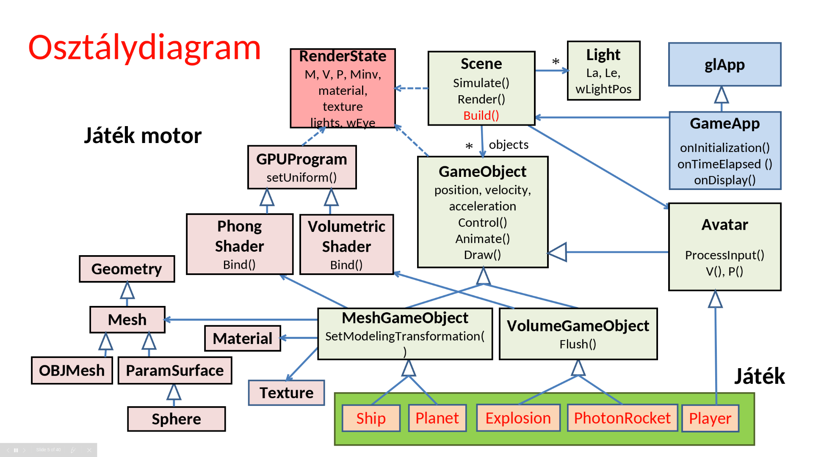
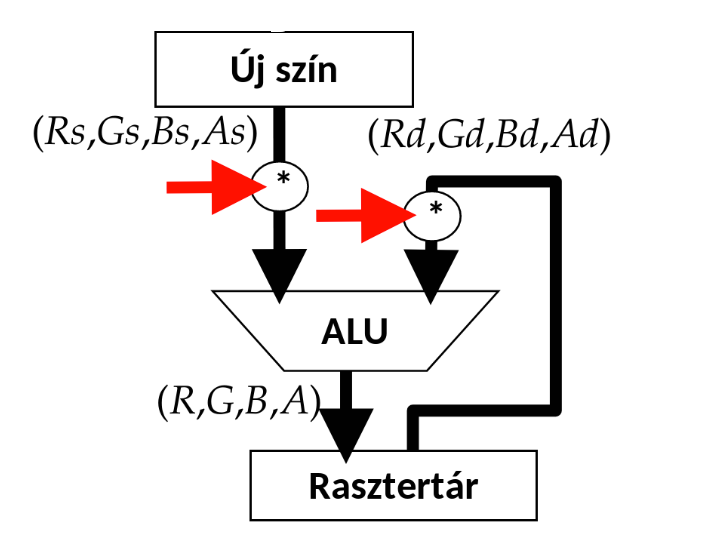
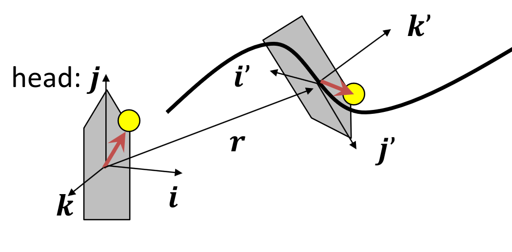

Játékfejlesztés
Virtuális valóság
Az egyes játékokban a számítógépünk RAMjában "élnek" a játékobjektumok, de mit is jelent az, hogy "élnek"? A mi esetünkben azt, hogy van állapotuk, és ezt az állapotot tudják változtatni a világ és a többi objektum állapota alapján. Ha minden objektum ezt csinálja, akkor a rendszerünk életre tud kelni. Viszont kell lennie egy kitüntetett objektumnak, ami az állapotát nem csak a többi objektum és a világ alapján változtatja, hanem a külvilág, a játszó ember alapján is. Ez az objektum reprezentál minket a virtuális világban, ez az avatár képvisel minket. Ő a szemünk (az ő szemszögéből látjuk a virtuális világot) és őt vezéreljük, szemben a többi objektummal, akik magukról döntenek.
Feladatok
- képszintézis az avatár nézőpontjából (a mi esetünkben csak egy darab szemből)
- avatár vezérlése valamilyen beviteli eszközzel (akár többel, legtöbbször keyboard-al)
- intelligens objektumok (AI/állapotgép)
- a fizika világ szimulációja (legtöbbször Newtoni fizika, mert ez az ismerős)
Ezek a feladatok annyira általánosak, hogy szinte minden játéknak a részei, ezért ezeket előre elkészíthetjük egy általános formában, azaz egy keretrendszer (ún. game engine) formájában. A game engine-nek hála nekünk elég csak a játék konkrétumait, működését és kinézetét megadni, leprogramozni.
Objektum orientáltság
Létre kell hozni az objektumokat, amik a játékban lesznek (Build()), viszont ezután el kell dönteni, hogy melyik objektumnak milyen műveletek kellenek. Minden objektum frissíti a saját állapotát (Control()), és ténylegesen fel is veszi ezt az új állapotot (Animate(), viszont ez még nem jelenik meg grafikusan! Ez egy belső állapotfelvétel.).
Miért választjuk szét az állapot frissítését, és felvevését?
A valós világ aszinkron, de a számítógépünk egy szekvenciális szimuláció (gondoljunk csak az órajelre), tehát minden állapotváltozást csak egymás után tud szimulálni. Ha lenne 100 objektumunk, és ebből az egyik változna, akkor ő neki kell tudnia az összes többi objektum állapotát, hogy el tudja dönteni, hogy ő milyet kell felvegyen. Itt még nincsen semmi baj, viszont ha ezt rögtön fel is veszi, és a második objektum is meg akar változni, akkor gondba ütközünk: amikor a második objektum körbenéz, akkor ő 98 darab "régi" állapotban lévő objektumot lát, és 1 olyat, ami már egy új állapotban van. A harmadik objektum már két darab "új" állapotú objektumot látna, és a végére amikor az utolsó objektum akarná frissíteni az állapotát, már minden más objektum valami teljesen más állapotot vett fel, mint amikor ő állapotot akart frissíteni. A való világ persze nem így működik, szóval először minden objektum meghatározza, hogy mi lesz a következő állapota, és mindenki egyszerre veszi ezeket fel, amikor már senki sem számolja a saját állapotát a többiek állapota alapján.
Az új állapotot meg is kell grafikusan jeleníteni (Draw()). Az avatár egy speciális objektum, tehát az ő esetében kell egy módszer arra, hogy irányítani tudjuk (ProcessInput()), és arra, hogy megmutassuk a felhasználónak, hogy mi a világ jelenlegi állapota (setCameraTransform())

Tekintsünk kicsit mélyebben a GameObject osztály implementációjába:
GameObject
struct GameObject {
vec3 position, velocity, acceleration; // fizikai animációhoz
bool alive = true; // él még
float boundingRadius = 0; // ütközésdetektáláshoz
virtual void Control(float tstart, float tend, Scene * scene) { }
bool Collide(GameObject * obj); // diszkrét ütközésdetektálás
bool Collide(GameObject * obj, float& tHit, vec3& wHit); // folytonos ütközés
virtual void Animate(float tstart, float tend) { // állapotváltás
float dt = tend - tstart;
position += velocity * dt; // Euler-integrálás
velocity += acceleration * dt;
}
virtual void Draw(RenderState state) { } // rajzolás
virtual void Kill() { alive = false; }
};
struct MeshGameObject : GameObject {
static PhongShader* shader; // árnyalóprogram
Texture* texture = nullptr;
Material* material = nullptr;
Mesh* geometry = nullptr;
public:
virtual void SetModelingTransformation(RenderState& state) {
state.M = translate(position); state.Minv = translate(-position);
}
virtual void Draw(RenderState state) {
SetModelingTransformation(state); // modellezési transzformáció
state.material = material; state.texture = texture;
shader->Bind(state); // transzformációk, anyag, textúra a GPU-ra
geometry->Draw(); // az objektum végigmegy a szerelőszalagon
}
};
A játékunk érzékelhető része GameObject-ekből áll, majdnem minden amit megjelenítünk egy GameObject (vagy annak leszármazottja, lásd fentebb a MeshGameObject-et). Ezek tárolás egy fa struktúrát követ, a gyökere a Scene, az összes többi csúcsban GameObjectek vannak, és ők is tartalmazhatnak más GameObjecteket (children).
Egy GameObject tudja magáról a megjelenítéséhez szükséges tulajdonságait és alakját. A kirajzoláskor ezeket beállítja a RenderState-be, mielőtt meghívná a geometry-ájára a kirajzolást. Fontos megemlíteni hogy az M transzformációs mátrixot (és inverzét) nem felülírja, hanem megszorozza az eddigi állapotot. Ez azért van így, mert a GameObjectek child-jainak helyzetét a parent-hez relatívan értelmezzük.
Példa a helyzet relatív értelmezéséhez
A Scene objektum indul a \((0, 0, 0)\) origó középpontból, a karakterünket direktben tartalmazza, melynek koordinátája egyenlő lesz a világbeli koordinátáival, mondjuk \((1, 1, 1)\). A karakter egyik child objektuma a kalapja, ennek koordinátái a (0, 0, 2), relatíven értelmezzük, tehát a karakterünk origójától lesz ilyen távolságban. Ha az ezekhez tartozó mátrixokat egymás után összeszorozzuk, kapjuk meg a child GameObject-ek tényleges világbeli pozícióját, itt ez most \((1, 1, 3)\) lenne.
Szimulációs hurok (Game loop)
void onTimeElapsed(float tstart, float tend) {
scene->Simulate(tstart, tend);
refreshScreen();
}
Amikor a programunk éppen nem renderel, megmérjük az előző Simulate óta eltelt időt, majd meghívjuk a szimuláló függvényt:
void Scene::Simulate(float tstart, float tend) {
avatar->ProcessInput();
const float dt = 0.01f; // dt kicsi
for (float t = tstart; t < tend; t += dt) {
float Dt = fmin(dt, tend - t);
for (auto* obj : objects) obj->Control(t, t+Dt, this);
for (auto* obj : objects) obj->Animate(t, t+Dt);
}
Mi itt a Dt? Ez az ún. delta time, ami méri két kirajzolt képkocka (azaz két szimulációs "update tick") közti időt. Ha az eltelt idő (te - ts) nagyon nagy, az szimulációs anomáliákhoz (pl. hibás ütközés, lásd Ütközések) vezethet, ezert bevezetunk egy maximum delta time valtozot (dt). Ha te - ts túllépné ezt a maximumot, akkor ezt az időegységet a biztonság kedvéért kisebb szeletekre bontjuk, kis lépésekben szimuláljuk le.
A szimulálás után pedig kirendereljük a jelenlegi állapotot:
void onDisplay() {
glViewport(0, 0, winWidth, winHeight);
glClear(GL_COLOR_BUFFER_BIT | GL_DEPTH_BUFFER_BIT);
scene->Render();
}
ahol a Render():
void Scene::Render() {
RenderState state;
state.wEye = avatar->position; state.light = light;
state.V = avatar->V(); state.P = avatar->P();
for (auto* obj : objects) obj->Draw(state);
VolumetricGameObject::Flush(state);
}
Figyeljük meg, hogy új RenderStatet hozunk létre, M és Minv az egységmátrix lesznek, azaz nem nyújtunk, nem forgatunk, nem méretezünk.
Volumetric shader

Kiterjedt, de nem egyértelműen meghatározható geometriájú térfogatok ("fuzzy"). Ezeknél vagy nem definiálható egy éles határ, vagy túlságosan számításigényes lenne, minimális előnyökért. Ezek tipikusan valamilyen szinten átlátszóak, a sűrűségük változó lehet. Kicsi pamacsokból rakjuk ezeket össze, ahol a pamacsok méretét, sűrűségét és színét változtatva tudunk elérni egy kívánt összhatást. A pamacs/flötyi (igen, ez a szakszó rá) geometriailag bonyolultnak tűnik, szóval csalunk: feltöltünk egy átlátszó képet a megjeleníteni kívánt pamacsról, és rátextúrázzuk a pamacs objektumokra (VolumetricGameObject, lásd alább).
struct VolumetricGameObject : GameObject {
static VolumetricShader* shader; // árnyalóprogram
static Volume* volume; // az összes pamacs
static Texture* splatTexture; // pamacstextúra
// az összegyűlt pamacsok lefényképezése
static void Flush(RenderState state) {
glEnable(GL_PROGRAM_POINT_SIZE);
glEnable(GL_BLEND); // kompozitálás engedélyezése
glBlendFunc(GL_SRC_ALPHA, GL_ONE_MINUS_SRC_ALPHA);
splatTexture->Bind();
shader->Bind(state);
volume->Sort(state.wEye);
volume->Draw();
glDisable(GL_BLEND); // kompozitálás tiltása
}
};
Mivel a kép határai átlátszóak, ezért nem lesz pontos határa. Viszont ha egy másik irányból is megnézzük a pamacsot, akkor lebukunk, hiszen a pamacsunk csak szemből néz ki úgy, ahogy akarjuk, hiszen egy képről beszélünk, végtelenül vékony. Viszont ha még egyet csalunk, akkor tudjuk orvosolni a problémát: ha folyton a néző felé forgatjuk a képet, akkor mindig pontosan azt látjuk, amit szeretnénk. Ezzel csak az a probléma, hogy feltűnő lehet, ha csak egy képet használunk, szóval a harmadik csalásunk az, hogy egy kép helyett mondjuk csinálunk 4-8 képet a pamacsunkról, mind különböző szögekben, aztán ezeket elforgatva rárakjuk az objektumunkra. Ha jól csináltuk, akkor már egy egész realisztikus képet kapunk a pamacsunkról.
Vertex shader:
uniform mat4 VP;
uniform int viewportHeight;
layout(location = 0) in vec3 wPos;
layout(location = 1) in vec4 color;
layout(location = 2) in float size;
out vec4 modulated;
void main() {
gl_Position = VP * vec4(wPos, 1.0f);
gl_PointSize = size * viewportHeight / gl_Position.w;
modulated = color;
}
Fragment shader:
uniform sampler2D textMap;
in vec4 modulated;
out vec4 outColor;
void main() {
outColor = texture(textMap, gl_PointCoord.xy) * modulated;
}
Ahhoz, hogy az átlátszóság működjön, kicsit kell állítgatni az OpenGL-t is CPU oldalról:
glEnable(GL_PROGRAM_POINT_SIZE);
glEnable(GL_BLEND);
glBlendFunc(GL_SRC_ALPHA,
GL_ONE_MINUS_SRC_ALPHA);
// VBO feltöltés a világkoord-ban
// Draw
glDisable(GL_BLEND);

Billboard
Mindig a kamera felé néző téglalap. Régen egy teljes téglalapra tették rá, de az OpenGL-be pontosan a pamacsok miatt behozták azt, hogy egy Point-ra is lehet textúrázni, így nem kell négy pontot eltárolni egy pamacsra, hanem elég csak egyet.
vec3 w = wEye - pos; // szem felé mutat
vec3 r = cross(up, w); // billboard vízszintes (jobb)
vec3 u = cross(r, w); // billboard függőleges (fel)
r = normalize(r) * size; // normalizáljuk és beállítjuk a méretet
u = normalize(u) * size;
Tehát a transzformációs mátrixa:
Avatar
struct Avatar : public GameObject {
vec3 wVup;
float fov = M_PI / 2.0f, fp = 0.01f, bp = 100.0f;
float asp = (float)winWidth / winHeight;
virtual void ProcessInput() = 0;
mat4 V() { return lookAt(position, position + velocity, wVup); }
mat4 P() { return perspective(fov, asp, fp, bp); }
};
A wVup lehet egyszerűen [0, 1, 0] vagy a pillanatnyi gyorsulásból és a korábbi wVup átlagából kaphatjuk meg.
Keyboard polling
bool keys[256]; // is pressed?
void onKeyboard(unsigned char key, int pX, int pY)
{
keys[key] = true;
}
void onKeyboardUp(unsigned char key, int pX, int pY)
{
keys[key] = false;
}
Egy tömbben tároljuk, hogy éppen mi a billentyűk állása, a fenti két eseményben állítjuk. Simulate közben ebből a tömbből polloljuk az állását.
Euler karakterisztika
Olyan objektumokat szeretnénk felrajzolni, amik a valóságban is létezhetnek (pl. nincsen végtelenül keskeny dolog a valóságban). Ezt úgy érjük el, hogy kiindulunk egy olyan alakzatból, amiről tudjuk, hogy a valóságban is létezhet (például egy kocka, vagy egy téglatest), ezután pedig olyan transzformációkat hajtunk végre rajta, amik "nem rontják el". Az ilyen féle transzformációkra azt mondjuk, hogy az Euler karakterisztika invariáns alattuk. Az Euler karakterisztika az alábbi kifejezés:
ahol \(\chi\) a felület topológiájától függ. Poliéderek esetén \(\chi = 2\).
Frenet keret
Egy transzformációval érjük el, hogy a nézőpont/geometria kijelölt "feje" a sebesség irányába nézzen.

Levezetés
Először kiszámoljuk a nem ortonormált (ortonormált = vektorok merőlegesek egymásra és egység hosszúak) formájában:
\(j' = v\)
\(k^* = k'(1-\alpha) + a \cdot \alpha\)
\(i' = j' \times k^*\)
ahol \(k'\) az előző tickben/állapotan lett meghatározva (kiindulásként lehet például \(k' = a\)), \(\alpha\) pedig egy súlyozási tényező, lehetővé teszi hogy az új és az előző \(k'\) előző között egy sima átmenetet biztosítsunk, és véd az \(a = 0\) eset ellen is.
Majd ortogonalizáljuk (Gram-Schmidt ortogonalizáció):
\(j' = v/|v| \quad\qquad\) (normalizáljuk)
\(i' = \cfrac{j' \times k^* }{|j' \times k^*|}\quad~~\) (ezt is)
\(k' = i' \times j'\qquad~\) (ezt már nem kell, hiszen két normalizált vektort keresztszoroztunk)
Esélyes hogy \(a\) és \(v\) nincs megadva. \(r\) első deriváltja \(v\), második deriváltja \(a\).
Ez kicsit leegyszerűsítve, \(\alpha = 1\) esetben a következő:
\(j' = \^v\)
\(i' = \^v \times \^a\)
\(k' = \^v \times \^a \times \^v\)
Ütközések
Ütközés szempontjából mindent gömbként kezelünk (vagy belerakjuk az objektumot egy gömbbe, és azok a gömbök ütköznek), és a távolságuk alapján döntjük el, hogy összeérnek-e.
bool GameObject::Collide(GameObject * obj) {
float dist = length(position - obj->position); // távolság
return (boundingRadius + obj->boundingRadius < dist);
}
Probléma: ha az objektum gyors, és/vagy a delta time nagy, akkor átmehetünk az objektumokon anélkül, hogy ütköznénk vele (diszkrét eset).

Megoldás: Folytonos ütközésdetektálás. Egy sugarat bocsátunk ki a mozgatás irányában, megnézzük hogy beleütközik-e valamibe.

A koordinátákat a vizsgált objektumhoz rögzítjük.
rel_pos = position - pos2
rel_velocity = velocity - vel2
Ray: rel_pos + rel_velocity * t
if (ray intersects bounding sphere first && tintersect < dt)
//collision
Bár még mindig nem tökéletes, mivel a mozgatott objektumnak nem vesszük figyelembe a kiterjedését.
Részecskerendszer (particlesystem)
ez amúgy egy jó dolog de nem mennék részletekbe, mert aki tudja tudja és valszeg nem lesz a vizsgán egy rakás billboard, de egyben kezeljük
Példának vegyünk porszemcséket, amit a szél fúj. Ezt a szelet tekintsük egy erőtérnek.
pos: pos += velocity * dt
velocity: velocity += acceleration * dt
acceleration: acceleration = force / weight
lifetime: random kezdeti érték
age: age += dt; if (age > lifetime) Kill();
size, dsize: size += dsize * dt;
weight, dweight: weight += dweight * dt
color, dcolor: color += dcolor * dt
Kvíz
1. A virtuális világban egy pontszerű test és egy gömb mozog. A pontszerű test a szimulációs időlépés kezdetén a \((1,2,5)\) pontban van (mértékegység parsec) és \((3,5,2)\) parsec/sec sebességgel halad. A gömb középpontja a szimulációs időlépés kezdetén a \((2,3,7)\) pontban van és \((9,6,2)\) parsec/sec sebességgel halad. Mekkora az a minimális gömbsugár, amely felett a két objektum a dt=100 msec időlépésben az intervallum elején tesztelő diszkrét ütközésdetektálási algoritmus szerint ütközik?
Megoldás
Váltsuk át a pontszerű test koordinátáit a gömbhöz relatíven. \(\(p_r = p_p - p_g = (1, 2, 5) - (2, 3, 7) = (-1, -1 -2)\)\) \(\(v_r = v_p - v_g = (3, 5, 2) - (9, 6, 2) = (-6, -1, 0)\)\) Vegyük észre, hogy a pont egyre csak még inkább távolodni fog a gömbtől, ha ütközést szeretnénk detektálni azt mihamarabb. Időlépés intervallum elején tesztelő, diszkrét Magyarán az első teszt \(t = 0 \cdot dt\) időben fut le. Ekkor a távolságuk \(|p_r| = \sqrt{6} \approx 2.45\)
2. Egy test \(3\) darab különálló poliéder részből áll, és egyik rész sem tartalmaz lyukat. A testen összesen \(10\) csúcsot és \(18\) lapot számoltunk meg. Hány éle van?
Megoldás
Euler karakterisztika invariánst felhasználva: \(\(\text{csúcs} - \text{él} + \text{lap} = \chi\)\) poliéderek esetén \(\chi = 2\), nekünk \(3\) poliéderünk van tehát \(\chi = 2 \cdot 3 = 6\) Behelyettesítve ez \(\(6 = 10 - \text{él} + 18\)\) \(\(\text{él} = 22\)\)
3. Egy billboard (plakát) referencia helyzetében az origóban van és az \(x, y\) síkra fekszik. Adjuk meg a modellezési transzformáció elemeit egy értékes jegyre, ha a
- a billboard mérete nem változik a transzformáció során
- a szem a világ \((4,2,7)\) pontjában van
- a billboard által reprezentált objektum a \((1,2,3)\) pontban van
- a billboard preferált függőleges iránya a \((0,1,0)\)
Megoldás
vec3 w = wEye - pos; // szem felé mutat
vec3 r = cross(w, up); // billboard vízszintes (jobb)
vec3 u = cross(r, w); // billboard függőleges (fel)
r = normalize(r) * size; // normalizáljuk és beállítjuk a méretet
u = normalize(u) * size;
4. Egy FPS játékban az avatár pillanatnyi pozíciója \((0, 0, 0)\), sebessége \((6, 8, 0)\), gyorsulása \((12, -9, 0)\). A kamera orientációt a Frenet kerettel állítjuk be. Mi lesz a kamera View transzformációja?
Megoldás
Nincs mese, ki kell számolni. \(\(r = (0, 0, 0)\)\) \(\(j' = \^v = (0.6, 0.8, 0)\)\) \(\(i' = \^v \times \^a = (0.6, 0.8, 0) \times (0.8, -0.6, 0) = (0,0,-1)\)\) \(\(k' = i' \times j' = (0.8, -0.6, 0)\)\) Ez egy transzformációs mátrix, nem a kamera View transzformációja. Tehát a mátrix: $$ \bold{T}_V = \begin{bmatrix} 1 & 0 & 0 & 0\newline 0 & 1 & 0 & 0\newline 0 & 0 & 1 & 0\newline -e_x & -e_y & -e_z & 1\newline \end{bmatrix} \begin{bmatrix} u_x & u_y & u_z & 0\newline v_x & v_y & v_z & 0\newline w_x & w_y & w_z & 0\newline 0 & 0 & 0 & 1\newline \end{bmatrix}^{-1} $$ Ahol: \(\(e = r\)\) \(\(u = i\)\) \(\(v = k\)\) \(\(w = -j\)\) (ugye nem felejtettük el, hogy a view \(-z\) irányba néz, és azt szeretnénk, hogy a irányába nézzünk) Megfeleltetés után, és annak tudatában, hogy a második mátrix ortonormált (tehát inverze önmaga transzponáltja) $$ \begin{bmatrix} 1 & 0 & 0 & 0\newline 0 & 1 & 0 & 0\newline 0 & 0 & 1 & 0\newline 0 & 0 & 0& 1\newline \end{bmatrix} \begin{bmatrix} 0 & 0 & -1 & 0 \newline 0.8 & -0.6 & 0 & 0 \newline -0.6 & -0.8 & 0 & 0 \newline 0 & 0 & 0 & 1 \end{bmatrix}^{-1}= \begin{bmatrix} 0 & 0.8 & -0.6 & 0 \newline 0 & -0.6 & -0.8 & 0 \newline -1 & 0 & 0 & 0 \newline 0 & 0 & 0 & 1 \newline \end{bmatrix} $$
5. Egy játékobjektum orr iránya referencia helyzetben az \(y\) tengely, függőleges iránya pedig a \(z\) tengely. Az objektum pályája \(r(t)=(\cos(t), \sin(t), t)\).
Adjuk meg a modellezési transzformáció elemeit egy értékes jegyre a \(t=\pi/4\)-re, ha az objektumot Frenet keret módszerrel animáljuk.
Megoldás
6. Az alábbi programsorok egy szimulációs hurkot (game loop) valósítanak meg, de nem jól működik. Válassza ki a hibás sorokat:
void onIdle ( ) { // idle call back
1) float tend = 0;
2) float tstart = tend;
3) tend = glutGet(GLUT_ELAPSED_TIME)/1000;
4) avatar->ProcessInput( );
5) for(float t = tstart; t < tend; t += dt) {
6) float Dt = min(dt, tend - t);
7) for (GameObject * obj : objects) obj->Control(dt);
8) for (GameObject * obj : objects) obj->Animate(dt);
}
9) onDisplay();
}
Megoldás
Hibás sorok:\(\newline\)
- 1: tend vagy static, vagy a függvényen kívül kell léteznie, nem nullázhatjuk mindig \(\newline\)
- 3: nem kell leosztanunk milliszekundumra \(\newline\)
- 8-9: először animálunk, utána irányítunk \(\newline\)
7. Mely problémák megoldásánál használnak Gram-Schmidt ortogonalizációt?
Megoldás
- Billboard (plakát)
- Frenet keret
- 3D kamera transzformáció
- Fizikai animáció
- 2D kamera transzformáció
8. Egy kockát két szinten Catmull-Clark algoritmussal felosztunk. Hány háromszög keletkezik?
Megoldás
Catmull-Clark algoritmusnál \(1\) négyszögből csinálunk \(4\)-et. \(\newline\) Ezt kétszer is megcsináljuk: \(6 \cdot 4 \cdot 4 = 96\) négyszög, ami kétszer ennyi háromszög, azaz \(192\).